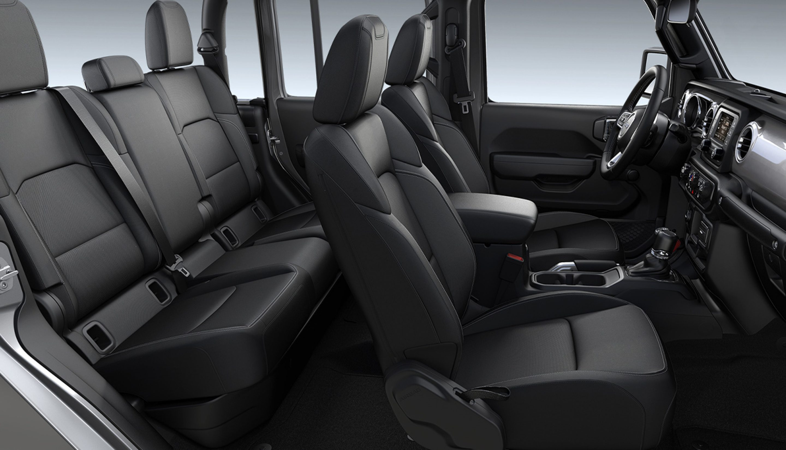

THE GLADIATOR INTERIOR IS BORN FROM AN ENDLESS PURSUIT OF PERFECTION, COMBINING AVAILABLE PREMIUM MATERIALS, A RUGGED DESIGN AND AN OBSESSION WITH DETAIL
Whether taking calls, listening to music or selecting entertainment, use Voice Command to take control of your interior features while keeping your hands on the wheel and eyes on the road.
Use voice or screen commands to set a destination and the Navigation system on the available Uconnect® 4C NAV with 8.4-inch touchscreen will guide you wherever you’re headed. It will also search for ATMs, restaurants, gas stations and other points of interest.
The available Industry-Exclusive removable Bluetooth® speaker recharges as you drive so you can take your music with you wherever you go. Plus, its weatherproof exterior is dust resistant and can withstand water up to 3 feet for 30 minutes.
Overland offers a collection of premium details designed to enhance the natural comfort of Gladiator–featuring available leather-trimmed seats and a wrapped dashboard with accent stitching. Plus, soft-touch surfaces are finished with platinum chrome bezels, handles and knobs.
With refined materials and Best-in-Class rear seat legroom , Gladiator seats are designed to offer comfort and support while you’re out seeking adventure. Discover the various color and trim combinations that add distinctive style to the seats, steering wheel, dashboard, shifter and bezels.
